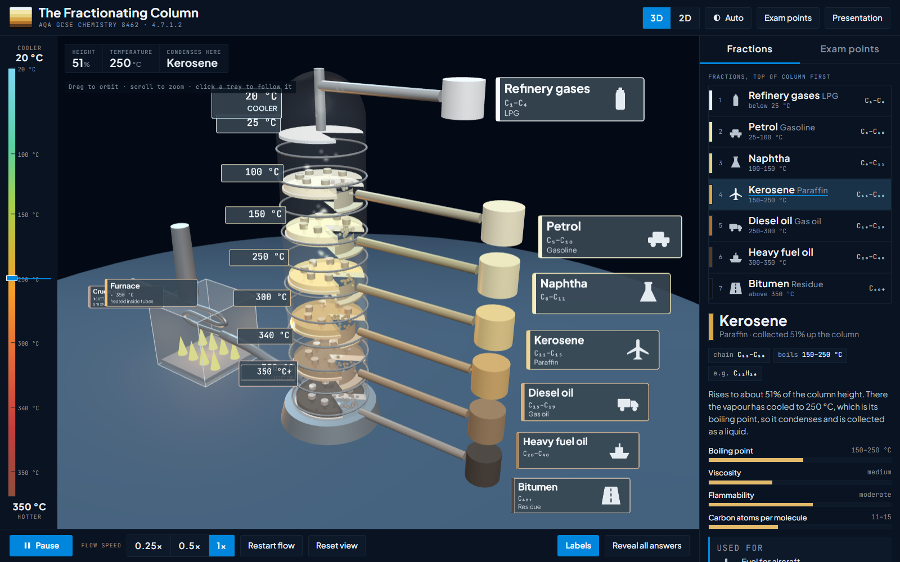
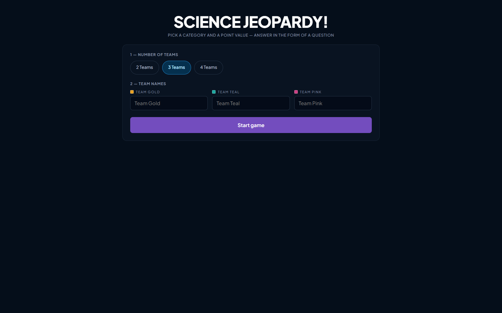

Explore3D models & visualisations
Rotate, section and slow down: time of flight spectrometry, fractionating columns and the atom through time.
Browse Explore
PlayRevision games & challenges
Mr Savage’s House of Games: quiz shows, retrieval grids and beat-the-clock rounds for starters, plenaries and last-minute recall.
Browse Play
Featured tools
The most-used tools this term.
All tools
22 of 22 shown
No tools match
Try a broader search or clear the filters.
Feedback or a tool idea?
Spotted a mistake, used a tool in a lesson, or wish something existed? I read every message, and many of these tools started as a teacher’s request.
Support the site
Savage Science Tools is built by a Head of Science in a UK secondary school, in evenings and weekends. It stays free, with no adverts or sign-ups. If it has helped you or your pupils, a coffee keeps it going.
Buy me a coffee on Ko-fi